DESIGN
A more in-depth look into his visual appearance
Coyle's character design is a perfect reflection of his character. He's grimy, ugly, thinks he's so much cooler than he is. His outfit has motifs from 1950s police officer uniforms and leather daddy get-ups, something I'm sure he knows nothing about. Like somebody was cosplaying a cell tower at a gay club.
Electrical burns cover the right-side of his face and neck, though it's unclear if this is self-inflicted or done by Murkoff in some way. There's a posibility that there are more burns on the rest of his body as well that we just can't see.
Hint: Clicking on an image lets you see it fully in a new tab
A good rundown of his design actually comes from the official cosplay guide. I've never seen a game studio do this before, really cool!
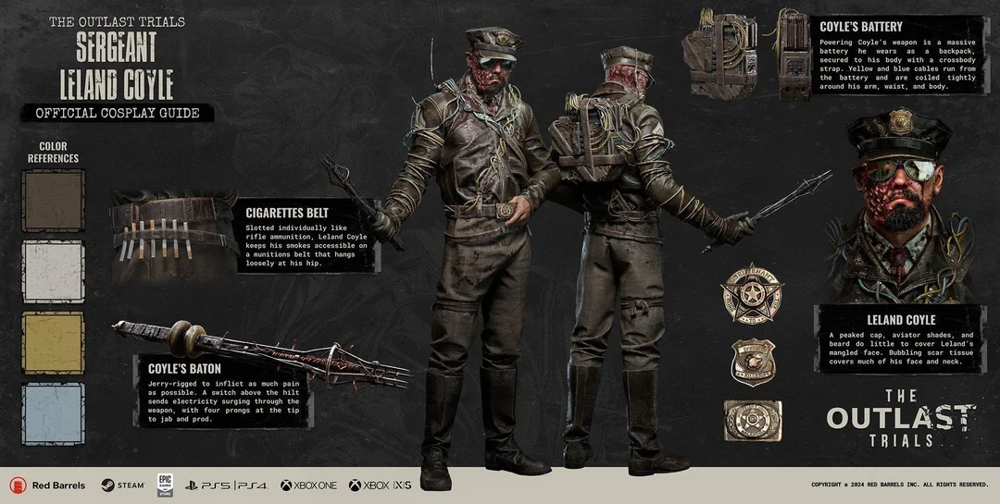
Official media by Red Barrels
Here's a closer look at his electrified baton / cattle prod. I'm assuming Leland fixed it up himself.
Note the insulating tape on the handle, which he holds with his only gloved hand. As seen in his concept art, there was likely also supposed to be a wire connceting the rod to the car battery strapped to his back. Now he just Bluetooths the electricity, I suppose.
Coyle's weapon is notably very similar to the picana, a South American torture device adapted from cattle prods and serving as the pre-cursor of today's stun guns.
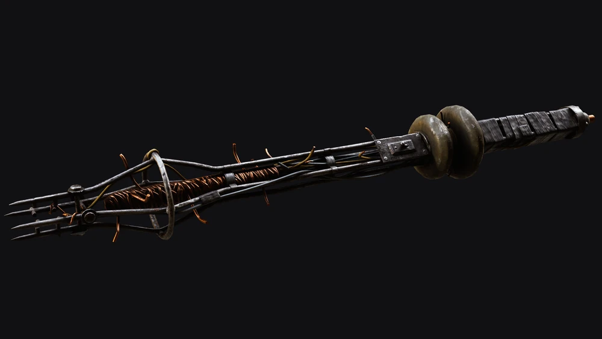
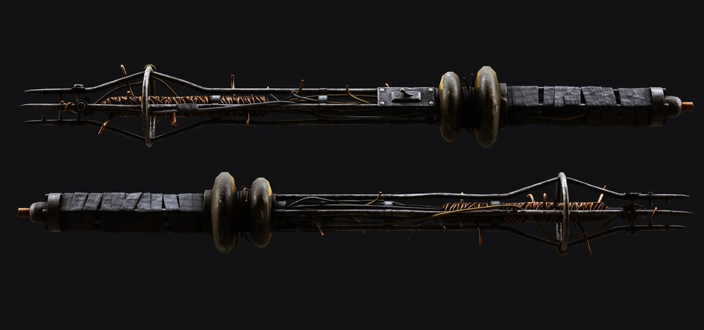
More details highlighted by his associated poster displayed in the Sleep Room during Prime Time.
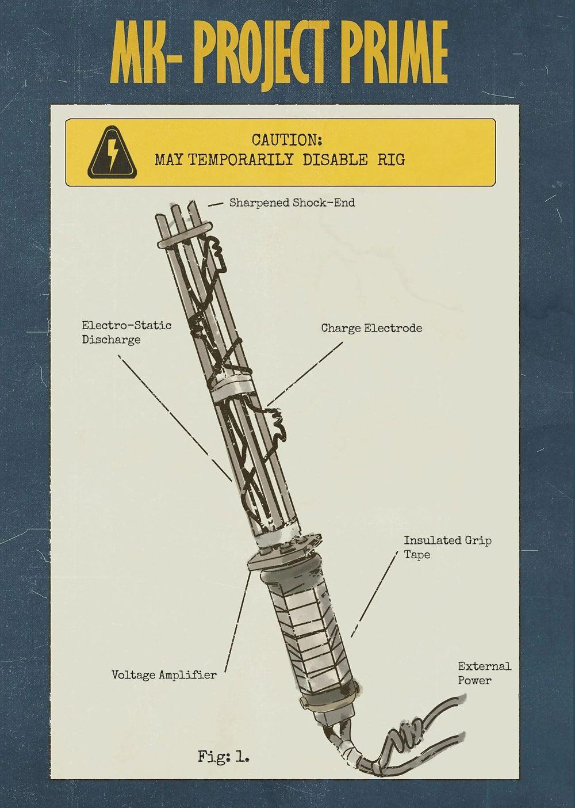
Official media by Red Barrels
Official turnarounds of his model. Isn't he just handsome? I also adore the... antenna? sticking up from the strap on his shoulder.
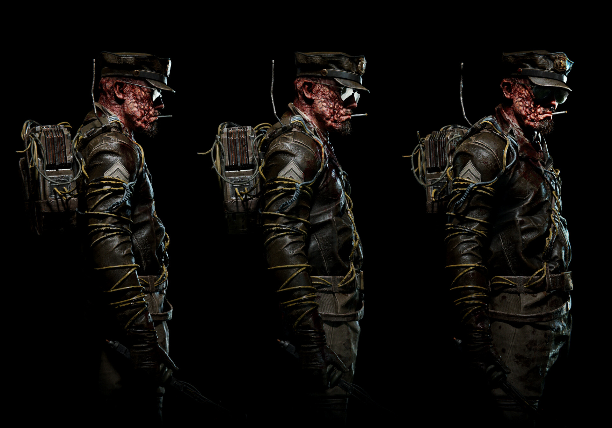
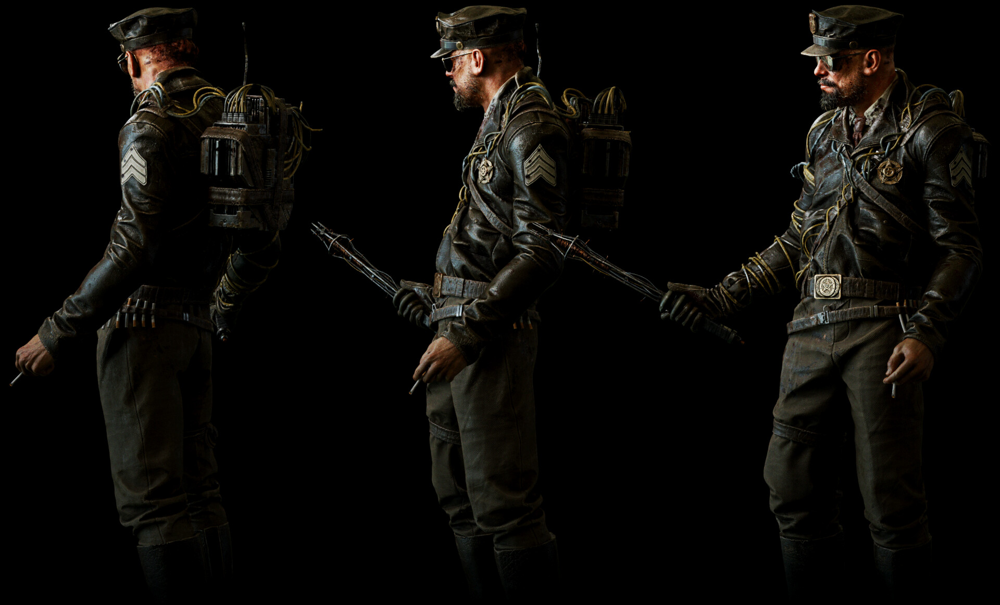
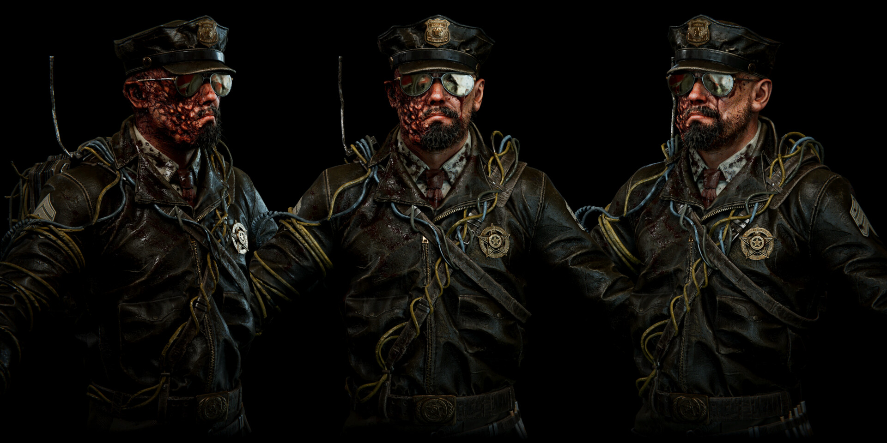
Images / model by William Jobin
He's never shown in-game without his hat or classes, so here he is. Note how his right ear is damages, as well as his right eye, nostril, and corner of his mouth are drooping, likely due to the electrical burns on his face. He also appears to have a lazy eye (how CUTE!!!). He's genuienly so gorgeous to me here.
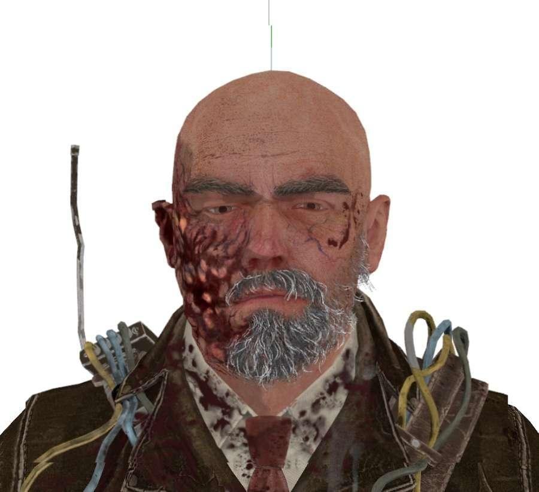
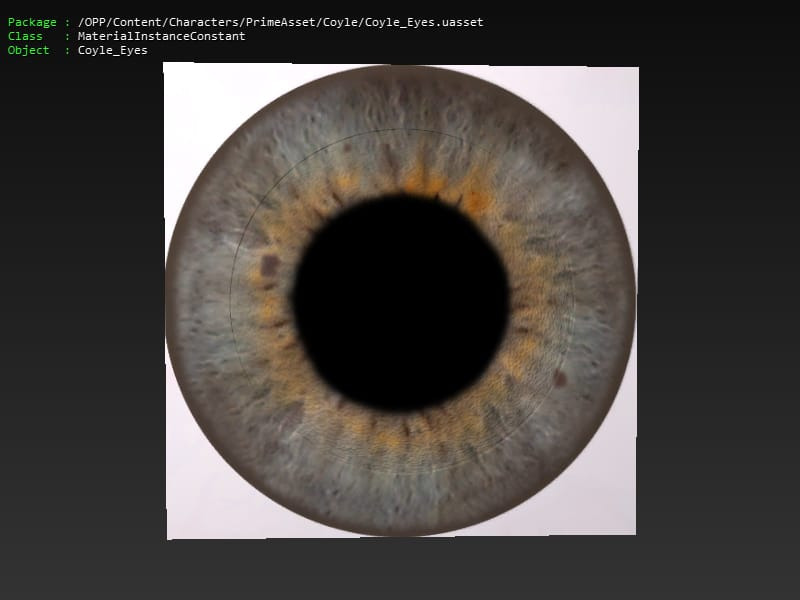
Images from reagent-leon on tumblr
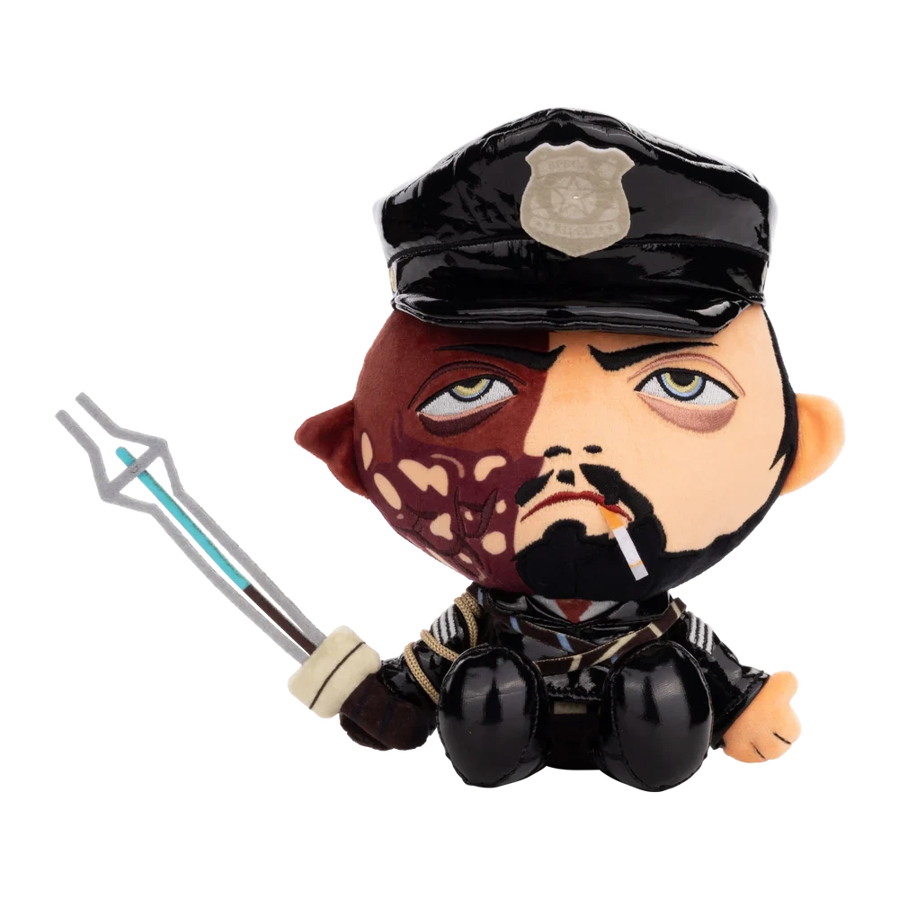
Official Makeship plushie without glasses
Pre-Murkoff, we see that Leland wore a normal police officer's uniform, and likely wears leather now because it looks cool as fuck. He also was clean shaven and had hair, though it seems the sunglasses have been a staple from the start.
Also, every pre-Murkoff image of him looks strikingly similar to Travis Touchdown to me, which is great because I love him too.
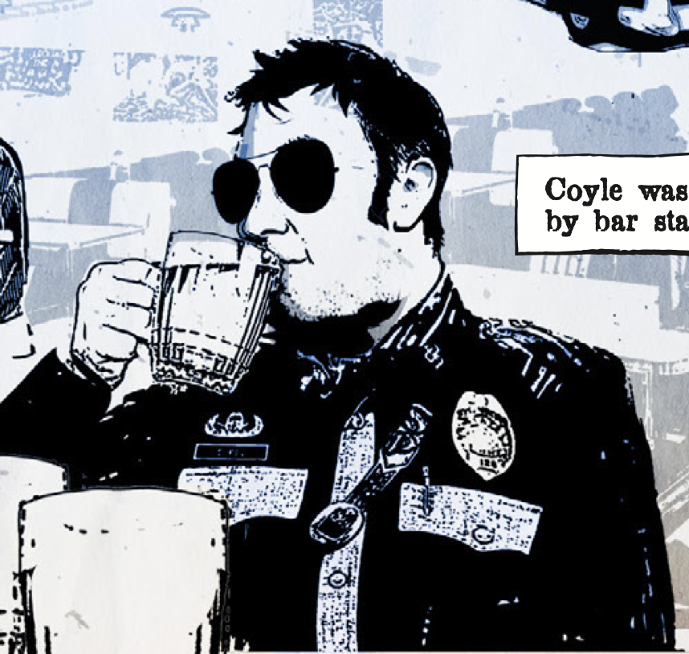
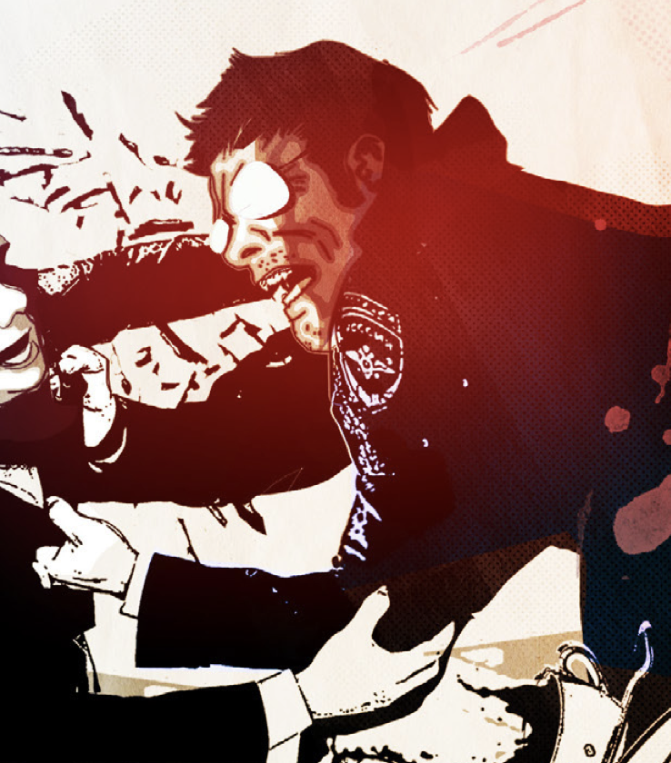
Official media by Red Barrels